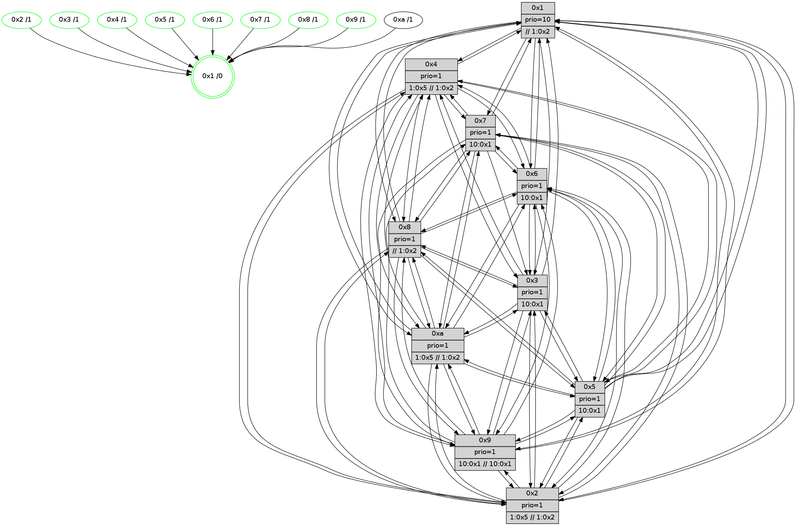

>> << IDX [start] -100 -25 -5 +0 +5 +25 +100 [680.585620165]
 Previous packets
----------------------------------------------------------------------
675.068702 beacon01(faad) #0 coord=01,02,03,04,05,06,07,0a,09,08 cycle=688.0ms assoc
-- color-indic=1 64 30 e2
675.078685 beacon02(faad) #0 coord=01,02,03,04,05,06,07,0a,09,08 cycle=688.0ms assoc 64 a3 d3
675.088684 beacon03(faad) #0 coord=01,02,03,04,05,06,07,0a,09,08 cycle=688.0ms assoc 64 d9 9e
675.098684 beacon04(faad) #0 coord=01,02,03,04,05,06,07,0a,09,08 cycle=688.0ms assoc 64 ae 74
675.108685 beacon05(faad) #0 coord=01,02,03,04,05,06,07,0a,09,08 cycle=688.0ms assoc 64 d4 39
675.118686 beacon06(faad) #0 coord=01,02,03,04,05,06,07,0a,09,08 cycle=688.0ms assoc 64 5a ee
675.128685 beacon07(faad) #0 coord=01,02,03,04,05,06,07,0a,09,08 cycle=688.0ms assoc 64 20 a3
675.138689 beacon0a(faad) #0 coord=01,02,03,04,05,06,07,0a,09,08 cycle=688.0ms assoc 64 51 a8
675.148691 beacon09(faad) #0 coord=01,02,03,04,05,06,07,0a,09,08 cycle=688.0ms assoc 64 df 7f
675.158692 beacon08(faad) #0 coord=01,02,03,04,05,06,07,0a,09,08 cycle=688.0ms assoc 64 a5 32
675.169918 [Hello(4): seq=433 sym=5,7,6,2,3,9,8,10,1 sysInfo= stat=5:4,10,1,6/7:15,13,3,2/6:8,4,4,7/2:9,10,14,6/3:15,2,11,4/9:3,2,0,3/8:9,5,2,7/10:10,8,3,6/1:5,10,2,1]
675.172917 [Hello(1): seq=342 sym=4,2,9,5,10,3,8,6,7 sysInfo=coloring-mode-on,ColoringModeRequestCalled stat=4:11,12,4,0/2:5,10,9,8/9:10,0,3,0/5:5,7,1,0/10:7,15,10,7/3:6,11,14,9/8:11,11,13,6/6:8,9,8,6/7:11,12,15,7]
675.175521 [Color(8) seq=113 @0:0 prio=1 >>1.@2,1.@3,1.@4]
675.177401 [Color(10) seq=91 @0:0 prio=1 >1.@5 >>1.@2,1.@3,1.@4]
675.182572 [STC(1) #0.56 tree-change,inconsistent-stability,stable,to-color d=0]
675.184570 [Hello(7): seq=433 sym=2,3,5,6,4,8,9,10,1 sysInfo=hasWarning stat=2:15,6,10,9/3:1,11,5,8/5:1,9,5,10/6:7,6,3,2/4:1,2,0,0/8:5,14,6,4/9:2,3,6,8/10:7,5,8,7/1:12,9,2,1]
675.187900 [Hello(3): seq=433 sym=1,7,6,2,4,8,9,10,5 sysInfo= stat=1:12,10,4,1/7:7,12,1,3/6:15,6,13,7/2:13,3,1,7/4:12,8,1,4/8:5,15,14,2/9:7,11,5,6/10:12,8,0,5/5:7,1,1,6]
675.190606 [Hello(6): seq=433 sym=2,3,5,4,7,9,8,10,1 sysInfo= stat=2:4,8,10,6/3:6,11,4,6/5:0,6,1,8/4:7,10,3,0/7:0,10,5,1/9:3,6,3,6/8:14,9,3,5/10:4,7,9,6/1:6,12,15,1]
----------------------------------------------------------------------
675.856836 beacon01(faad) #0 coord=01,02,03,04,05,06,07,0a,09,08 cycle=688.0ms assoc
-- color-indic=1 64 8c e7
675.866818 beacon02(faad) #0 coord=01,02,03,04,05,06,07,0a,09,08 cycle=688.0ms assoc 64 1f d6
675.876818 beacon03(faad) #0 coord=01,02,03,04,05,06,07,0a,09,08 cycle=688.0ms assoc 64 65 9b
675.886818 beacon04(faad) #0 coord=01,02,03,04,05,06,07,0a,09,08 cycle=688.0ms assoc 64 12 71
675.896817 beacon05(faad) #0 coord=01,02,03,04,05,06,07,0a,09,08 cycle=688.0ms assoc 64 68 3c
675.906819 beacon06(faad) #0 coord=01,02,03,04,05,06,07,0a,09,08 cycle=688.0ms assoc 64 e6 eb
675.916818 beacon07(faad) #0 coord=01,02,03,04,05,06,07,0a,09,08 cycle=688.0ms assoc 64 9c a6
675.926825 beacon0a(faad) #0 coord=01,02,03,04,05,06,07,0a,09,08 cycle=688.0ms assoc 64 ed ad
675.936824 beacon09(faad) #0 coord=01,02,03,04,05,06,07,0a,09,08 cycle=688.0ms assoc 64 63 7a
675.946824 beacon08(faad) #0 coord=01,02,03,04,05,06,07,0a,09,08 cycle=688.0ms assoc 64 19 37
675.958862 [Hello(10): seq=366 sym=6,2,3,8,9,5,7,4,1 sysInfo= stat=6:3,14,4,2/2:4,11,10,1/3:7,14,9,3/8:3,10,15,6/9:7,12,14,4/5:9,4,15,7/7:0,9,1,2/4:1,14,11,6/1:1,2,2,1]
675.963933 [STC(10)->1 #0.56 to-color d=1]
675.965372 [Color(6) seq=103 @0:0 prio=1 >10.@1,1.@2,1.@3,1.@5]
675.967162 [STC(4)->1 #0.56 tree-change,inconsistent-stability,stable,to-color d=1]
675.969117 [Hello(2): seq=430 sym=4,5,7,6,3,9,8,10,1 sysInfo=hasWarning stat=4:5,10,1,4/5:2,5,0,0/7:7,9,5,3/6:9,3,2,5/3:9,5,13,1/9:6,4,14,1/8:15,1,11,4/10:2,1,14,4/1:0,8,14,1]
675.971817 [Hello(9): seq=377 sym=5,2,3,4,7,6,8,10,1 sysInfo=hasWarning stat=5:13,1,15,8/2:15,7,6,5/3:9,6,13,6/4:11,15,0,5/7:4,4,6,3/6:12,11,0,5/8:9,14,7,2/10:9,6,3,7/1:15,9,5,1]
675.974949 [STC(9)->1 #0.56 tree-change,inconsistent-stability,stable,to-color d=1]
675.976251 [Hello(5): seq=434 sym=7,6,4,3,1,9,8,10,2 sysInfo= stat=7:1,13,5,3/6:15,0,3,6/4:9,6,14,5/3:2,3,12,4/1:2,13,2,1/9:8,9,2,3/8:9,9,12,4/10:13,11,2,5/2:2,3,0,0]
675.979304 [Hello(8): seq=377 sym=5,2,3,4,7,6,9,10,1 sysInfo=hasWarning,coloring-mode-on,ColoringModeIndicationCalled stat=5:3,4,3,6/2:9,10,10,1/3:2,0,0,8/4:9,11,4,6/7:3,10,3,5/6:12,0,15,7/9:8,12,4,5/10:14,12,2,6/1:4,4,3,0]
675.982277 [Color(1) seq=114 @0:0 prio=10 >>1.@2,1.@3,1.@4]
675.984511 [STC(8)->1 #0.56 tree-change,inconsistent-stability,stable,to-color d=1]
675.987677 [STC(5)->1 #0.56 tree-change,inconsistent-stability,stable,to-color d=1]
675.989622 [Color(5) seq=87 @0:0 prio=1 >10.@1,1.@2,1.@3,1.@4]
675.991882 [Color(9) seq=82 @0:0 prio=1 >10.@1,1.@2,1.@3,1.@5 >>10.@1,1.@2,1.@3]
675.996750 [Color(4) seq=77 @0:0 prio=1 >1.@5 >>1.@2,1.@3,1.@4]
676.002246 [STC(2)->1 #0.56 tree-change,inconsistent-stability,stable,to-color d=1]
676.006111 [Color(2) seq=79 @0:0 prio=1 >1.@5 >>1.@2,1.@3,1.@4]
----------------------------------------------------------------------
676.644966 beacon01(faad) #0 coord=01,02,03,04,05,06,07,0a,09,08 cycle=688.0ms assoc
-- color-indic=1 64 b8 ff
676.654949 beacon02(faad) #0 coord=01,02,03,04,05,06,07,0a,09,08 cycle=688.0ms assoc 64 2b ce
676.664948 beacon03(faad) #0 coord=01,02,03,04,05,06,07,0a,09,08 cycle=688.0ms assoc 64 51 83
676.674949 beacon04(faad) #0 coord=01,02,03,04,05,06,07,0a,09,08 cycle=688.0ms assoc 64 26 69
676.684949 beacon05(faad) #0 coord=01,02,03,04,05,06,07,0a,09,08 cycle=688.0ms assoc 64 5c 24
676.694949 beacon06(faad) #0 coord=01,02,03,04,05,06,07,0a,09,08 cycle=688.0ms assoc 64 d2 f3
676.704950 beacon07(faad) #0 coord=01,02,03,04,05,06,07,0a,09,08 cycle=688.0ms assoc 64 a8 be
676.714953 beacon0a(faad) #0 coord=01,02,03,04,05,06,07,0a,09,08 cycle=688.0ms assoc 64 d9 b5
676.724955 beacon09(faad) #0 coord=01,02,03,04,05,06,07,0a,09,08 cycle=688.0ms assoc 64 57 62
676.734955 beacon08(faad) #0 coord=01,02,03,04,05,06,07,0a,09,08 cycle=688.0ms assoc 64 2d 2f
676.746181 [Hello(4): seq=434 sym=5,7,6,2,3,9,8,10,1 sysInfo= stat=5:4,10,1,6/7:0,13,3,2/6:9,4,4,7/2:9,11,15,6/3:0,2,11,4/9:3,2,0,3/8:9,6,2,7/10:11,9,3,6/1:6,10,3,1]
676.748987 [Hello(7): seq=434 sym=2,3,5,6,4,8,9,10,1 sysInfo=hasWarning stat=2:0,7,11,9/3:2,11,5,8/5:2,10,6,10/6:8,7,3,2/4:1,3,1,0/8:6,14,7,4/9:3,4,7,8/10:8,5,9,7/1:12,10,2,1]
676.751423 [Hello(6): seq=434 sym=2,3,5,4,7,9,8,10,1 sysInfo= stat=2:5,9,11,6/3:6,11,4,6/5:1,7,2,8/4:7,11,4,0/7:0,10,5,1/9:4,7,4,6/8:15,9,4,5/10:5,7,9,6/1:6,13,15,1]
676.753989 [Color(8) seq=114 @0:0 prio=1 >>1.@2,1.@3,1.@4]
676.757143 [Hello(3): seq=434 sym=1,7,6,2,4,8,9,10,5 sysInfo= stat=1:12,11,4,1/7:7,12,1,3/6:0,7,13,7/2:14,4,2,7/4:12,9,2,4/8:6,15,15,2/9:8,12,6,6/10:13,8,1,5/5:8,2,2,6]
676.761341 [Hello(1): seq=343 sym=4,2,9,5,10,3,8,6,7 sysInfo=coloring-mode-on,ColoringModeRequestCalled stat=4:11,13,4,0/2:5,11,10,8/9:10,1,3,0/5:5,8,2,0/10:8,15,10,7/3:7,11,14,9/8:11,11,14,6/6:9,9,8,6/7:12,12,15,7]
----------------------------------------------------------------------
677.433098 beacon01(faad) #0 coord=01,02,03,04,05,06,07,0a,09,08 cycle=688.0ms assoc
-- color-indic=1 64 04 fa
677.443080 beacon02(faad) #0 coord=01,02,03,04,05,06,07,0a,09,08 cycle=688.0ms assoc 64 97 cb
677.453080 beacon03(faad) #0 coord=01,02,03,04,05,06,07,0a,09,08 cycle=688.0ms assoc 64 ed 86
677.463081 beacon04(faad) #0 coord=01,02,03,04,05,06,07,0a,09,08 cycle=688.0ms assoc 64 9a 6c
677.473080 beacon05(faad) #0 coord=01,02,03,04,05,06,07,0a,09,08 cycle=688.0ms assoc 64 e0 21
677.483081 beacon06(faad) #0 coord=01,02,03,04,05,06,07,0a,09,08 cycle=688.0ms assoc 64 6e f6
677.493081 beacon07(faad) #0 coord=01,02,03,04,05,06,07,0a,09,08 cycle=688.0ms assoc 64 14 bb
677.503087 beacon0a(faad) #0 coord=01,02,03,04,05,06,07,0a,09,08 cycle=688.0ms assoc 64 65 b0
677.513086 beacon09(faad) #0 coord=01,02,03,04,05,06,07,0a,09,08 cycle=688.0ms assoc 64 eb 67
677.523086 beacon08(faad) #0 coord=01,02,03,04,05,06,07,0a,09,08 cycle=688.0ms assoc 64 91 2a
677.534270 [Hello(10): seq=367 sym=6,2,3,8,9,5,7,4,1 sysInfo= stat=6:3,15,4,2/2:5,12,11,1/3:8,14,9,3/8:4,11,0,6/9:8,13,15,4/5:10,5,0,7/7:1,9,1,2/4:2,15,12,6/1:2,3,2,1]
677.537363 [Color(3) seq=99 @0:0 prio=1 >10.@1,1.@2,1.@5,1.@8]
677.539923 [Color(4) seq=78 @0:0 prio=1 >1.@5 >>1.@2,1.@3,1.@4]
677.542099 [Hello(9): seq=378 sym=5,2,3,4,7,6,8,10,1 sysInfo=hasWarning stat=5:13,1,15,8/2:15,8,7,5/3:10,6,13,6/4:12,0,0,5/7:5,4,6,3/6:12,11,0,5/8:9,15,7,2/10:10,6,3,7/1:0,9,5,1]
677.544592 [Color(6) seq=104 @0:0 prio=1 >10.@1,1.@2,1.@3,1.@5]
677.546523 [Color(9) seq=83 @0:0 prio=1 >10.@1,1.@2,1.@3,1.@5 >>10.@1,1.@2,1.@3]
677.549744 [Hello(2): seq=431 sym=4,5,7,6,3,9,8,10,1 sysInfo=hasWarning stat=4:6,10,1,4/5:2,5,0,0/7:8,9,5,3/6:9,3,2,5/3:10,5,13,1/9:6,4,14,1/8:15,2,11,4/10:3,1,14,4/1:1,8,14,1]
677.552297 [Color(1) seq=115 @0:0 prio=10 >>1.@2,1.@3,1.@4]
677.554795 [Color(2) seq=80 @0:0 prio=1 >1.@5 >>1.@2,1.@3,1.@4]
677.558836 [Hello(5): seq=435 sym=7,6,4,3,1,9,8,10,2 sysInfo= stat=7:2,13,5,3/6:15,0,3,6/4:10,7,14,5/3:3,3,12,4/1:3,13,2,1/9:8,10,2,3/8:9,10,12,4/10:14,11,2,5/2:2,4,1,0]
677.561982 [Color(5) seq=88 @0:0 prio=1 >10.@1,1.@2,1.@3,1.@4]
677.563878 [Color(7) seq=87 @0:0 prio=1 >10.@1,1.@2,1.@3,1.@5]
----------------------------------------------------------------------
678.221227 beacon01(faad) #0 coord=01,02,03,04,05,06,07,0a,09,08 cycle=688.0ms assoc
-- color-indic=1 64 c0 f4
678.231209 beacon02(faad) #0 coord=01,02,03,04,05,06,07,0a,09,08 cycle=688.0ms assoc 64 53 c5
678.241210 beacon03(faad) #0 coord=01,02,03,04,05,06,07,0a,09,08 cycle=688.0ms assoc 64 29 88
678.251209 beacon04(faad) #0 coord=01,02,03,04,05,06,07,0a,09,08 cycle=688.0ms assoc 64 5e 62
678.261209 beacon05(faad) #0 coord=01,02,03,04,05,06,07,0a,09,08 cycle=688.0ms assoc 64 24 2f
678.271210 beacon06(faad) #0 coord=01,02,03,04,05,06,07,0a,09,08 cycle=688.0ms assoc 64 aa f8
678.281211 beacon07(faad) #0 coord=01,02,03,04,05,06,07,0a,09,08 cycle=688.0ms assoc 64 d0 b5
678.291214 beacon0a(faad) #0 coord=01,02,03,04,05,06,07,0a,09,08 cycle=688.0ms assoc 64 a1 be
678.301216 beacon09(faad) #0 coord=01,02,03,04,05,06,07,0a,09,08 cycle=688.0ms assoc 64 2f 69
678.311216 beacon08(faad) #0 coord=01,02,03,04,05,06,07,0a,09,08 cycle=688.0ms assoc 64 55 24
678.322461 [Hello(6): seq=435 sym=2,3,5,4,9,8,10,1 sysInfo= stat=2:6,10,11,6/3:7,11,4,6/5:2,8,2,8/4:7,11,4,0/9:4,8,4,6/8:15,10,4,5/10:6,7,9,6/1:7,14,15,1]
678.326287 [Color(8) seq=115 @0:0 prio=1 >>1.@2,1.@3,1.@4]
678.328467 [Hello(4): seq=435 sym=5,7,6,2,3,9,8,10,1 sysInfo= stat=5:5,11,1,6/7:1,14,3,2/6:9,5,4,7/2:10,12,15,6/3:1,2,11,4/9:4,3,0,3/8:9,7,2,7/10:12,9,3,6/1:7,11,3,1]
678.333233 [Hello(7): seq=435 sym=2,3,5,6,4,8,9,10,1 sysInfo=hasWarning stat=2:0,7,11,9/3:3,11,5,8/5:2,10,6,10/6:9,7,3,2/4:1,3,1,0/8:6,15,7,4/9:3,4,7,8/10:9,5,9,7/1:13,10,2,1]
678.338549 [Hello(3): seq=435 sym=1,6,2,4,8,9,10,5 sysInfo= stat=1:13,12,4,1/6:0,8,13,7/2:15,5,2,7/4:12,10,2,4/8:6,15,15,2/9:9,13,6,6/10:14,8,1,5/5:9,3,2,6]
678.343999 [Hello(1): seq=344 sym=4,2,9,5,10,3,8,6,7 sysInfo=coloring-mode-on,ColoringModeRequestCalled stat=4:11,13,4,0/2:5,12,10,8/9:10,1,3,0/5:6,9,2,0/10:9,15,10,7/3:7,11,14,9/8:11,11,14,6/6:9,9,8,6/7:12,13,15,7]
679.019340 beacon02(faad) #0 coord=01,02,03,04,05,06,07,0a,09,08 cycle=688.0ms assoc 64 ef c0
679.029340 beacon03(faad) #0 coord=01,02,03,04,05,06,07,0a,09,08 cycle=688.0ms assoc 64 95 8d
679.039340 beacon04(faad) #0 coord=01,02,03,04,05,06,07,0a,09,08 cycle=688.0ms assoc 64 e2 67
679.049341 beacon05(faad) #0 coord=01,02,03,04,05,06,07,0a,09,08 cycle=688.0ms assoc 64 98 2a
679.059342 beacon06(faad) #0 coord=01,02,03,04,05,06,07,0a,09,08 cycle=688.0ms assoc 64 16 fd
679.069341 beacon07(faad) #0 coord=01,02,03,04,05,06,07,0a,09,08 cycle=688.0ms assoc 64 6c b0
679.079344 beacon0a(faad) #0 coord=01,02,03,04,05,06,07,0a,09,08 cycle=688.0ms assoc 64 1d bb
679.089346 beacon09(faad) #0 coord=01,02,03,04,05,06,07,0a,09,08 cycle=688.0ms assoc 64 93 6c
679.099347 beacon08(faad) #0 coord=01,02,03,04,05,06,07,0a,09,08 cycle=688.0ms assoc 64 e9 21
679.110584 [Hello(8): seq=379 sym=5,2,3,4,7,6,9,10,1 sysInfo=hasWarning,coloring-mode-on,ColoringModeIndicationCalled stat=5:4,6,4,6/2:10,12,11,1/3:4,0,0,8/4:11,13,4,6/7:4,11,3,5/6:13,1,15,7/9:9,14,4,5/10:14,12,2,6/1:6,5,3,0]
679.113856 [Hello(10): seq=368 sym=6,2,3,8,9,5,7,4,1 sysInfo= stat=6:4,0,4,2/2:6,13,11,1/3:9,15,9,3/8:4,12,0,6/9:9,14,15,4/5:11,6,0,7/7:2,10,1,2/4:3,0,12,6/1:3,4,2,1]
679.117032 [Color(6) seq=105 @0:0 prio=1 >10.@1,1.@2,1.@3,1.@5]
679.118836 [Hello(9): seq=379 sym=5,2,3,4,7,6,8,10,1 sysInfo=hasWarning stat=5:14,2,15,8/2:0,9,7,5/3:11,6,13,6/4:13,0,0,5/7:6,5,6,3/6:13,11,0,5/8:10,0,7,2/10:11,6,3,7/1:1,10,5,1]
679.122931 [Color(5) seq=89 @0:0 prio=1 >10.@1,1.@2,1.@3,1.@4]
679.124807 [Color(9) seq=84 @0:0 prio=1 >10.@1,1.@2,1.@3,1.@5 >>10.@1,1.@2,1.@3]
679.127028 [Color(4) seq=79 @0:0 prio=1 >1.@5 >>1.@2,1.@3,1.@4]
679.129327 [Hello(2): seq=432 sym=4,5,7,6,3,9,8,10,1 sysInfo=hasWarning stat=4:7,10,1,4/5:3,6,0,0/7:9,10,5,3/6:10,3,2,5/3:11,6,13,1/9:6,4,14,1/8:15,3,11,4/10:4,1,14,4/1:2,8,14,1]
679.132134 [Color(2) seq=81 @0:0 prio=1 >1.@5 >>1.@2,1.@3,1.@4]
679.135349 [Color(7) seq=88 @0:0 prio=1 >10.@1,1.@2,1.@3,1.@5]
679.138175 [Color(3) seq=100 @0:0 prio=1 >10.@1,1.@2,1.@5,1.@8]
679.142377 [Color(1) seq=116 @0:0 prio=10 >>1.@2,1.@3,1.@4]
----------------------------------------------------------------------
679.797489 beacon01(faad) #0 coord=01,02,03,04,05,06,07,0a,09,08 cycle=688.0ms assoc
-- color-indic=1 64 68 9f
679.807471 beacon02(faad) #0 coord=01,02,03,04,05,06,07,0a,09,08 cycle=688.0ms assoc 64 fb ae
679.817471 beacon03(faad) #0 coord=01,02,03,04,05,06,07,0a,09,08 cycle=688.0ms assoc 64 81 e3
679.827471 beacon04(faad) #0 coord=01,02,03,04,05,06,07,0a,09,08 cycle=688.0ms assoc 64 f6 09
679.837473 beacon05(faad) #0 coord=01,02,03,04,05,06,07,0a,09,08 cycle=688.0ms assoc 64 8c 44
679.847472 beacon06(faad) #0 coord=01,02,03,04,05,06,07,0a,09,08 cycle=688.0ms assoc 64 02 93
679.857473 beacon07(faad) #0 coord=01,02,03,04,05,06,07,0a,09,08 cycle=688.0ms assoc 64 78 de
679.867477 beacon0a(faad) #0 coord=01,02,03,04,05,06,07,0a,09,08 cycle=688.0ms assoc 64 09 d5
679.877477 beacon09(faad) #0 coord=01,02,03,04,05,06,07,0a,09,08 cycle=688.0ms assoc 64 87 02
679.887476 beacon08(faad) #0 coord=01,02,03,04,05,06,07,0a,09,08 cycle=688.0ms assoc 64 fd 4f
679.898717 [Hello(4): seq=436 sym=5,7,6,2,3,9,8,10,1 sysInfo= stat=5:5,11,1,6/7:2,15,3,2/6:9,5,4,7/2:11,13,15,6/3:2,3,11,4/9:4,3,0,3/8:10,7,2,7/10:12,9,3,6/1:8,12,3,1]
679.902969 [Hello(3): seq=436 sym=1,6,2,4,8,9,10,5 sysInfo= stat=1:14,13,4,1/6:0,8,13,7/2:15,5,2,7/4:12,10,2,4/8:7,15,15,2/9:9,13,6,6/10:14,8,1,5/5:9,3,2,6]
679.905725 [STC(10)->1 #0.57 tree-change,inconsistent-stability,to-color d=1]
679.907107 [Hello(7): seq=436 sym=2,3,5,6,4,8,9,10,1 sysInfo=hasWarning stat=2:0,7,11,9/3:4,12,5,8/5:2,10,6,10/6:9,7,3,2/4:1,3,1,0/8:7,15,7,4/9:3,4,7,8/10:9,5,9,7/1:14,11,2,1]
679.914301 [STC(8)->1 #0.57 tree-change,inconsistent-stability,stable,to-color d=1]
679.917534 [Color(8) seq=116 @0:0 prio=1 >>1.@2,1.@3,1.@4]
679.924388 [Hello(6): seq=436 sym=2,3,5,4,7,9,8,10,1 sysInfo= stat=2:7,11,11,6/3:8,12,4,6/5:2,9,2,8/4:8,12,4,0/7:0,1,0,0/9:5,9,4,6/8:0,11,4,5/10:6,7,9,6/1:8,15,15,1]